Cliffs, dunes and hills
Raised ground, drops, sand dunes and grassy hills are all one thing in Ink Hammer: a cliff line. Draw the top edge, pick a look, then tune it.
Drawing a cliff
- Draw a line with the Pen (P), then tick Cliff in Properties, or pick Pen > Cliff before you draw.
- The line is the top edge. Face depth is how far the side reaches down from it.
- Close the shape for a plateau. With Inside is: Low ground a closed shape is a pit instead.
- The sun lights a cliff by its real shape: the sunny side is bright, ledges catch the light and a shadow falls where the rock meets the ground.
- Edit the line like any Pen line: drag points, pull curves, change the width of each point. In line edit the orange foot points set where the face meets the ground.
Looks
Properties > Cliff > Look sets a whole style in one go. Every setting stays yours to change afterwards. Each picture is a closed outcrop on grass with the afternoon sun from the top left.
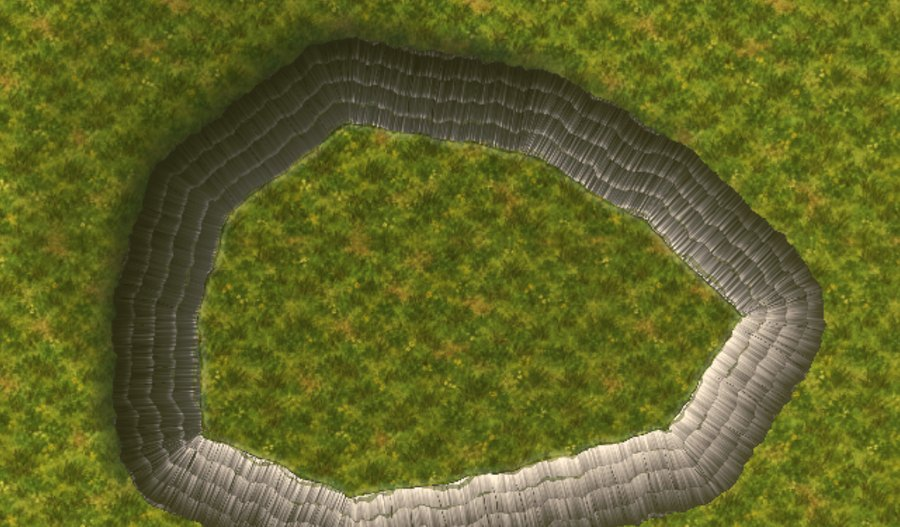
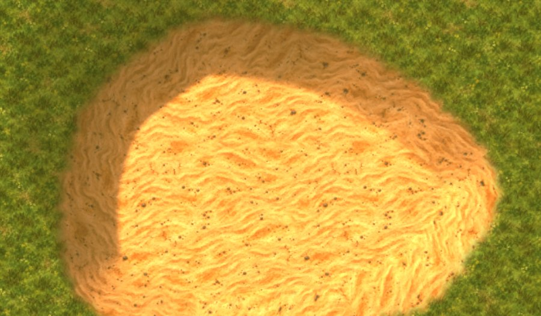
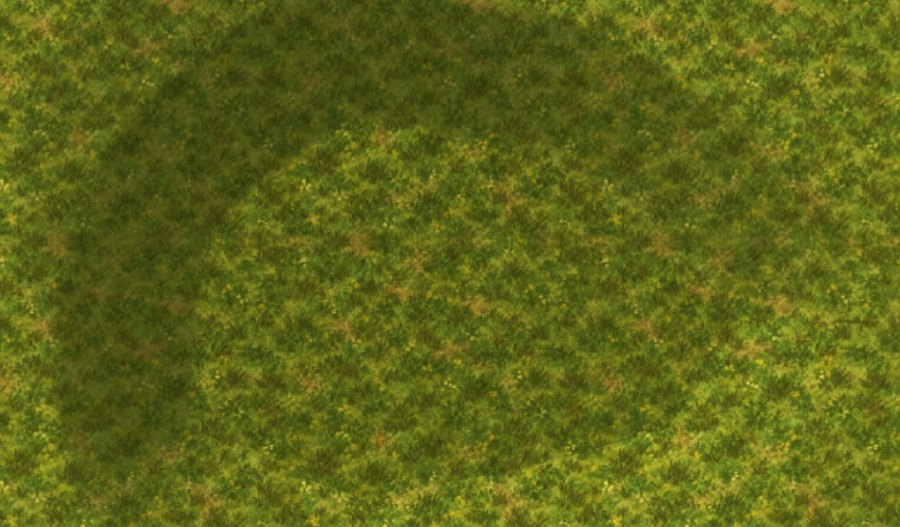
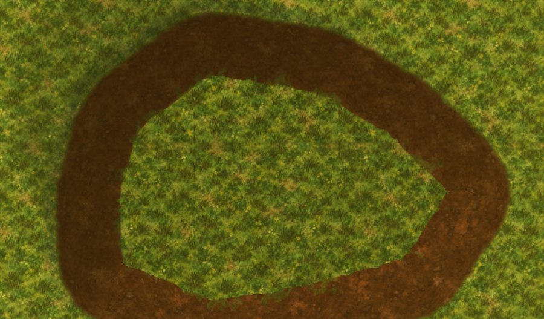
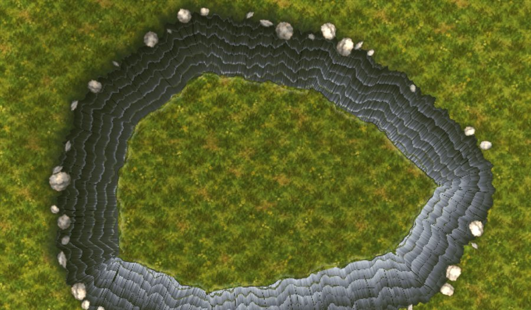
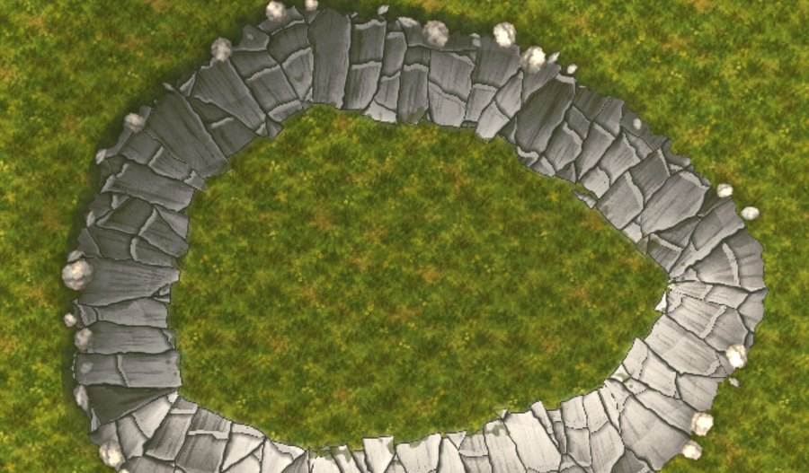
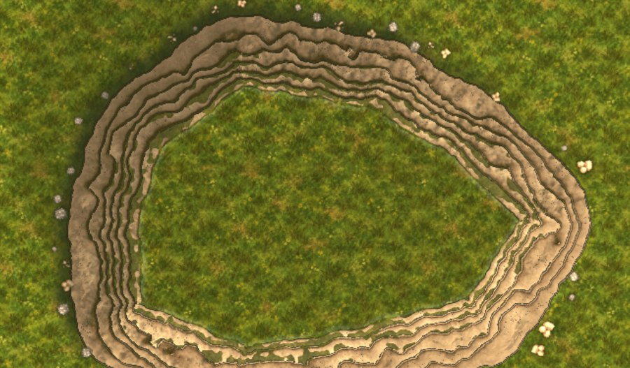
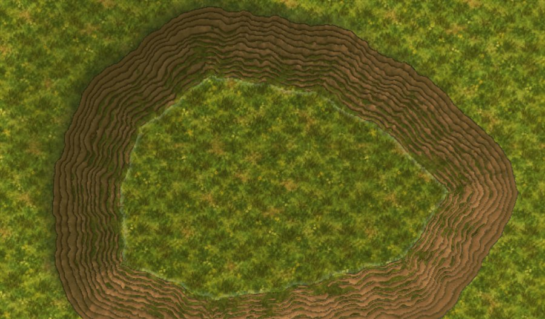
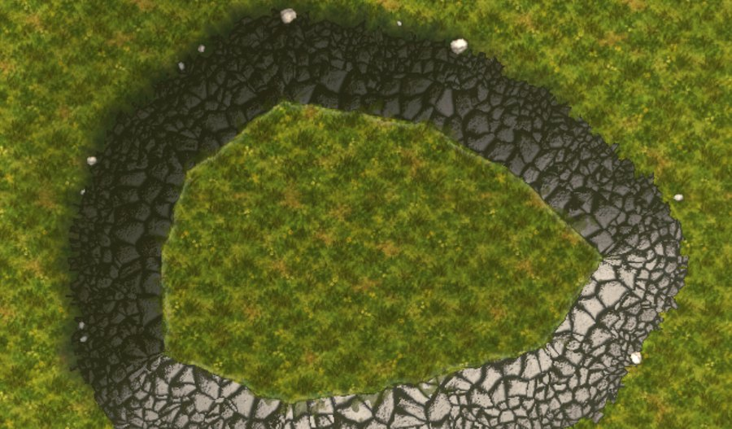
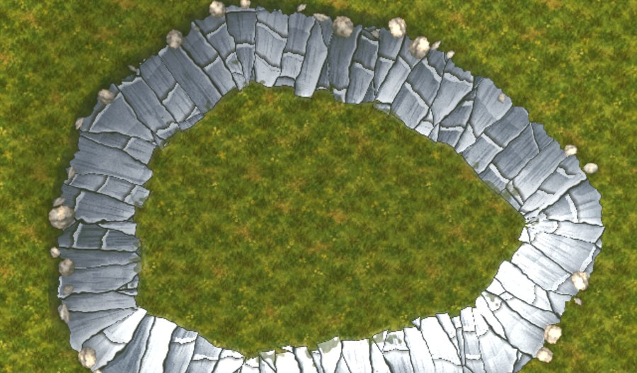
Breakup: ground on the ledges New in 0.9.24
The ground on top (grass, sand, snow) breaks onto the first ledges in patches and thins out down the face, so a cliff top blends into its rock instead of ending on a hard line. The ground at the foot can creep up the lowest ledges the same way.
- Properties > Breakup: ground on the ledges: Top ground and Foot ground (0 is off), Reach down and Reach up (how far along the face), Patch size.
- It uses the ground that is there. Pick a Top texture or Foot texture to use another.
- The rock looks start with a little top breakup already on.
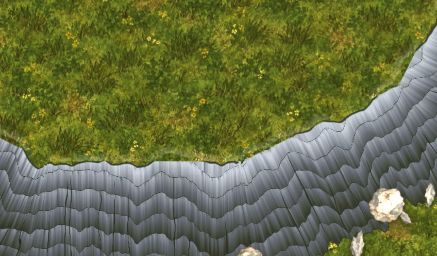
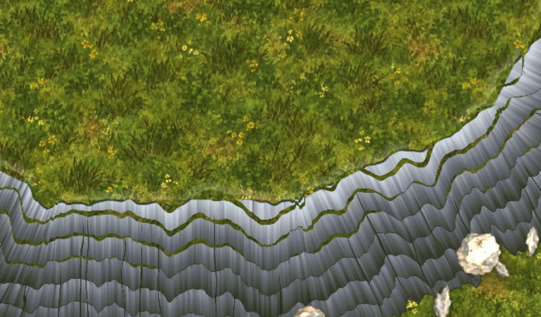
Round top for dunes and banks New in 0.9.24
For a side made of the same stuff as the top (sand, earth, turf), Round top rolls the side over from the top like a dome, so a dune flows into its top with no edge. It is in the Sides: texture section. 0 is a straight bank, 1 a full dome. The Sand dune look starts with it on.
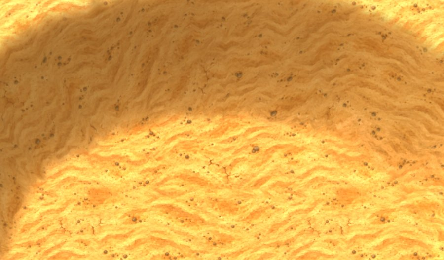
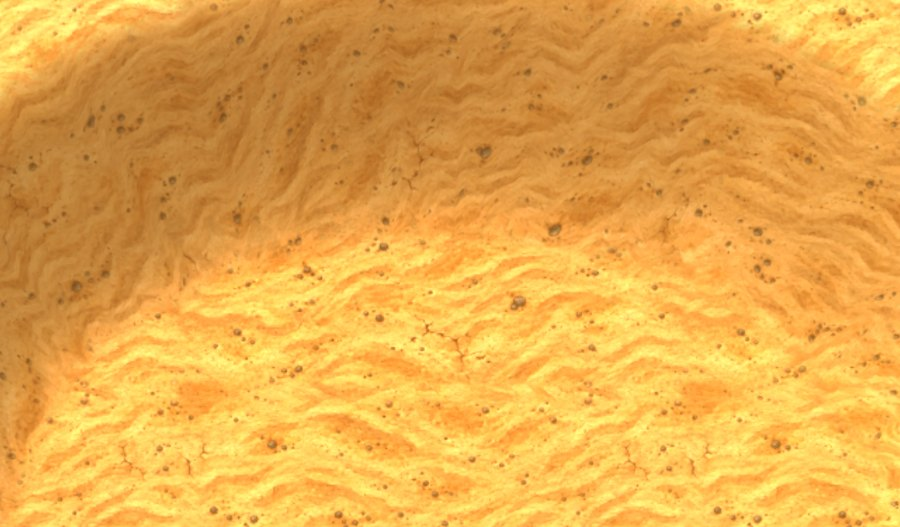
Soft slopes, dunes and hills
- Hills: Style > Soft slope (or the Grassy hill look) draws no face at all. The shape only raises the ground, so your ground layers show on the slope and the sun shades it. With Low ground it makes a hollow.
- Dunes and banks: Style > Texture with a sand or soil texture in Sides, Shadow at 0, and Fade top and Fade foot to blend the side into the top and the ground. Add Round top for a rolling dune.
- Keep a hill low (Height 4 to 8 ft). At the default 15 ft a hill throws a wall's shadow.
Opacity and tint New in 0.9.24
Cliffs and the spills over them take Opacity and Tint in Properties > Look, like props. Use tint to match a cliff to a palette (a cold blue for a night map, a red rock for a desert). Opacity fades the whole cliff.
Props on cliffs and slopes
- A prop on a clifftop edge stands on the top when most of it is over the top, and below when most of it is over the drop.
- In Properties a prop on a slope can Stand, Hug the slope or be Set into the face.
- A prop lying across the foot of a cliff sits over it cleanly, with no dark band cut across it.
Submerge: sink a prop into the ground New in 0.9.24
Half-buried statues, a boulder sunk into sand, a log in mud: Properties > Submerge fades a prop into the ground from one side, with a ragged soft edge and a touch of dirt along the line. Its shadow shrinks with it.
- Side: Bottom, Top, Left, Right or All round.
- How far: how much of the picture is under the ground.
- Soft edge, Ragged edge and Dirt shape the line where it meets the ground.
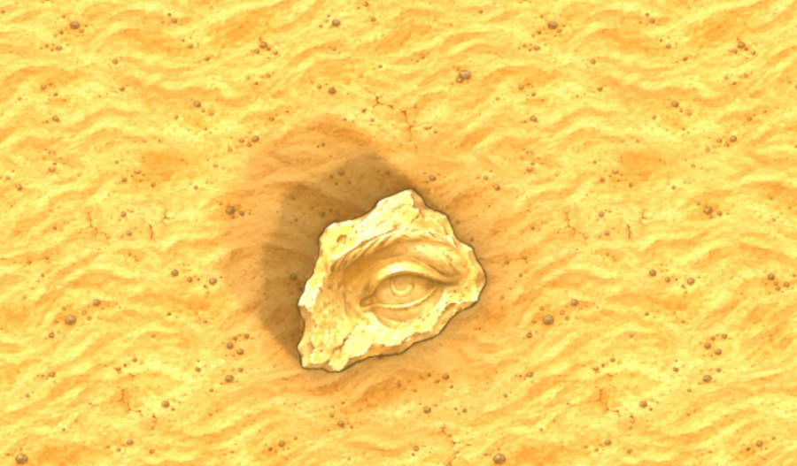
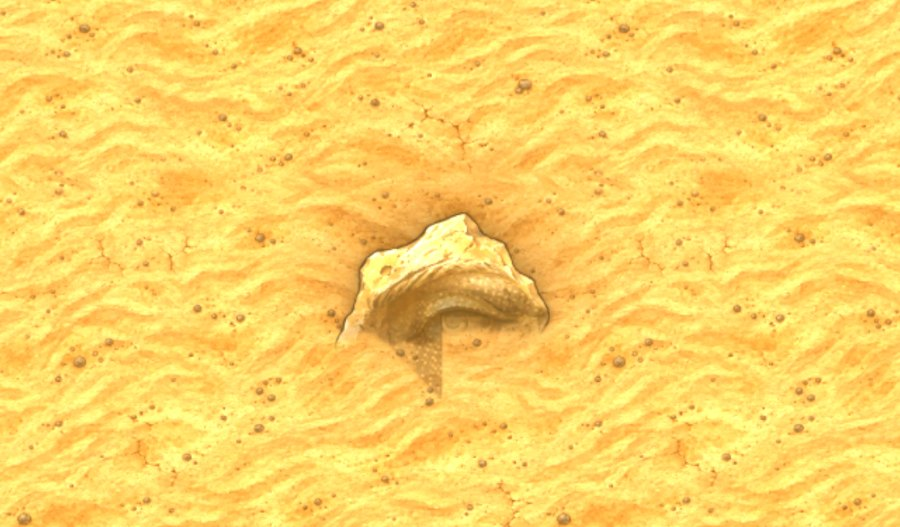
Tips
- Keep the top's soft edge smaller than the face depth, or the top texture spreads onto the ground below.
- Overlapping cliff shapes meet as solids.
- A dark patch that comes and goes on a clifftop as you edit is usually a tall prop's shadow: move the prop or lower its height.